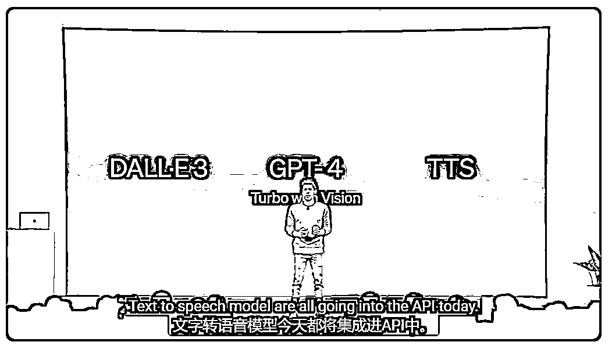
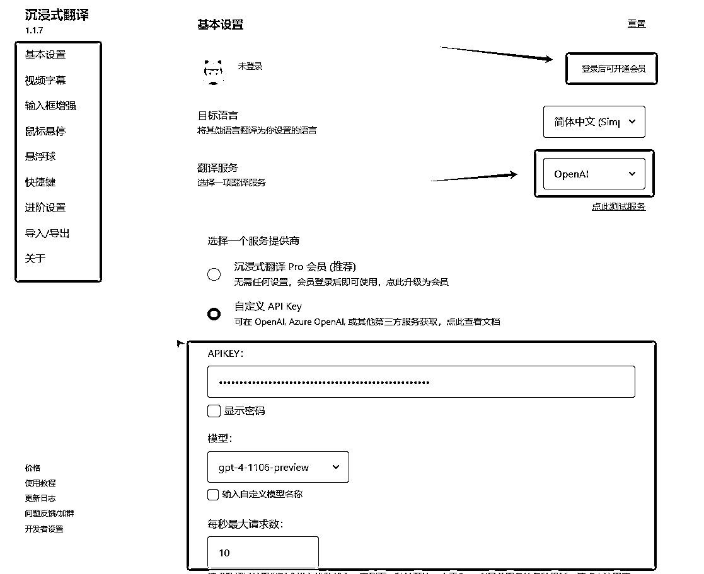

来源：https://fieghf3pzz6.feishu.cn/docx/HOCtd11SuoJfXFxBNxlcESQ0nwe
【昵称】AI 同行侠-文卓
【微信】394710556（请备注来意，不闲聊，朋友圈空空如也）
【标签】AI+翻译家
【自我介绍】
◆ 2023年，专注于AI Prompt策略研究及商业应用，从零开始，完成AI落地应用的积累，并实现最小MVP。
◆ 2024年，深耕基于Prompt的AI+翻译赛道，累计为客户翻译科技类英文单词700万+，网文小说70万+，译前排版2万页+。
【我提供的资源】
1、PDF、Word文档等译前排版服务（保留源文档数学公式、图片、表格等格式）
2、摆脱机器味的书稿AI翻译服务（多国语言翻译为中文）
3、个性化翻译解决方案（如面向欧美用户的网文小说，中译英本地化翻译）。
4、生财精华文章：免费体验生财有术入口
在这个全球化迅速发展的时代，能够流利沟通是我们每个人的需求，也是我们共同的“痛点”。但是，掌握一门新语言可能需要耗费高达2000小时的学习时间——这相当于每天投入5个小时，连续一年无休！这是一个令人望而生畏的任务！
从小到大，我的英语考试从来没有及过格，看过我的2篇生财精华文章的圈友都知道，在2023年3月接触GPT时，我不懂编程、不懂写作、更不懂英语。
但现在，一个在四线城市且不懂英语的我，却可以无障碍的学习英文课程、资讯、视频、论文文献等一切与英语相关的信息，并将学习到的知识运用到自己的业务中。
例如写了GPT辅助写作SOP精华文章，无障碍学习官方视频课程和文字教程，运用提示词技巧结合客户需求落地应用实现收益，目前AI相关项目收益单月已破10000+元。着重关注身边的小问题，别人的问题既是需求，运用AI解决别人的问题，钱自然就赚到。我可以做到，你也行！
本篇文章将介绍在数字网络上，如何通过翻译工具实现无障碍沟通，实时阅读外国文字、视频资料，达到学习、工作、交流的目的，不再需要耗费无数个小时学习新语言！
特别提醒：重要文件翻译建议使用GPT-4或DeepL翻译API，翻译准确性质量更高，平时娱乐看视频等可以用免费的微软翻译或谷歌翻译。
本篇文章分为3个部分，目录如下：
1.1、在线学习的障碍： 你想学习OpenAI的官方提示词教程，但发现所有的教材和文档都是英语，你努力去理解，但语言的障碍让学习变得异常艰难！失不失望？
1.2、国际客户的丢单： 你是一位自由职业者，想要出海赚钱，在网上寻找国际客户，一位潜在客户对你的服务很感兴趣，但由于你无法理解他的语言，无法有效沟通需求和细节，最终这个潜在客户流向了其他能够进行多语言沟通的竞争对手，闹不闹心？
1.3、国际工作机会的错失： 你在网上看到一个完美的工作机会，各方面的技能和经验都与你非常匹配，但它要求能够流利使用一门你不熟悉的语言，语言的限制让这个机会与你擦肩而过，气不气人？
1.4、获取信息的限制： 你渴望从第一手的外语来源中获得信息，例如OpenAI的官方资讯、AIGC的发展动向，但语言的障碍让你只能依赖于二手的信息源，这限制了你获取本行业信息的时效性，无法抢先竞争对手一步，烦不烦恼？
1.5、重要电子邮件的误读： 你收到了一封用外语写的电子邮件，例如合同请求、网站收购、广告投入等，但由于语言障碍，你无法准确理解邮件内容，错过了一个可能改变个人或公司命运的合作机会，后不后悔？
1.6、社交媒体上的误解： 你在社交媒体（X、Whatapp、Mate等）与外国合作伙伴进行讨论时，因为语言障碍，你的聊天内容被误解，引发了一系列的负面反应，原本想要表达的友好和幽默，在语言的隔阂下变成了尴尬和误会。揪不揪心？
........
以上种种遇到的困难均表明，语言障碍对个人发展可能带来很多不利的影响，想要走向全球，就必须攻破语言这个难关！
2.1、提高学习效率： 翻译工具让我们能够轻松理解和使用数十种甚至上百种语言，轻松阅读外文资料、课程、文献等，提升自身的知识水平和视野。
2.2、提升工作效率： 在国际化的工作环境中，翻译工具帮助我们快速理解和回应不同语言的电子邮件、报告和文件，从而提高工作效率和专业能力。
2.3、提高销售转化率：熟练使用翻译工具能帮助你更好地理解不同文化背景的潜在客户，从而进行更有效的沟通，建立信任和联系。及时解决国际客户的疑问或问题，提高客户满意度和忠诚度。
2.4、增加职场竞争力： 掌握翻译工具使用技巧有助于职业发展，特别是在外贸、翻译、教育等领域，增加就业竞争力。
2.5、扩大信息获取力： 翻译工具帮助我们获取和理解外语新闻、研究报告等，让我们能够紧跟国际动态和学术前沿。
2.6、促进国际文化交流： 它使我们能够与来自世界各地的人进行交流，无论是社交媒体上的朋友还是国际会议中的同事。
翻译工具是一个强大的数字化助力，可以极大地丰富我们的学习资源、优化工作流程、扩大全球视野，并增强跨文化沟通的能力，随着技术的进步，自然语言处理（LLM）和机器学习的发展，翻译工具的准确性和实用性将持续提升，为用户带来更多的便利和机遇。
对于学习AI相关技能的我们来说，沉浸式翻译插件可以实时翻译网页上的文字内容和视频字幕，而且中英文的对照可以更好地帮助我们理解和吸收信息。注意，是实时翻译！
以学习“openai官方提示词教程”为例进行讲解，教程原文网址：https://platform.openai.com/docs/guides/prompt-engineering
翻译效果见下图：
以学习“openai官方提示词教程PDF文档”为例进行讲解，翻译效果见下图：
以youtube上“OpenAI 开发者日：主题演讲回顾”为例，翻译效果见下图：

以X上的“openai”发布信息为例，openai计划从从近1000名申请者中选出了10个团队，授予他们10万美元，用于设计、构建和测试使用民主方法决定管理AI系统规则的想法。
如果你无法访问谷歌官方商店，可以直接下载最新沉浸式翻译 Chrome 浏览器 zip 安装包， 下载后请先解压到一个常用的文件夹内，然后在地址栏输入：chrome://extensions，打开扩展管理窗口，然后启用“开发人员模式”，选择“加载解压缩的扩展”，选择刚刚解压后的文件夹载入即可安装成功。
浏览器的右上角，点击图上的图标（见下面的左图），点击沉浸式翻译进入设置页面。
直接点击网页右侧的沉浸式翻译快捷图标翻译（见下面左图），
直接在网页里点击鼠标右键，选择【翻译网页/显示原文】也可翻译（见下面右图）
不用开通会员，微软翻译和谷歌翻译都是免费的，会员的openai翻译源是GPT-3.5，没有自己购买的OpenAi和DeepL的API翻译来的实在，登陆是为了记录API key。

有重要
在任何输入框里输入中文后，默认是快速连击 3 次空格键，即可将输入框内容翻译为你指定的语言，在设置那里可以修改输入框内容翻译的快捷键。
可以用代码切换翻译语言，例如：
/ja 你好吗？ 会翻译为：お元気ですか？
/ko 你好吗？ 会翻译为：안녕하세요?
支持主流网站的视频字幕翻译，具体见下图的对话框，建议优先使用微软或谷歌的免费翻译，涉及到重要的资料时再切换到GPT-4或Deepl。
点击右边悬浮窗的设置，然后点击右下角的更多，即可打开选择窗口，需要翻译什么格式的文件找到对应的入口上传操作即可。
手机版微信输入法：支持英语、日语、韩语
1、在应用宝或应用商城下载《微信输入法》APP（图1）
2、打开微信输入法，点击键盘左上角的P，（图2）
3、点击右上角的两条杠，（图3）
4、下滑到定制工具栏，点击更多定制选项，（图4）
5、选择边写边译，（图5）
6、边写边译的快捷键就出现在键盘的右上方，（图6）
7、开始边写边译，即可实现输入中文，输出译文的效果，（图7）
至此分享结束，在这个信息爆炸的时代，掌握翻译工具的能力就像是开启了一扇通往知识海洋的大门。这不仅是一种能力的提升，更是一次心灵的旅行。
记住，每一次成功的沟通都是我们成为更好的自己的一小步，别让语言成为障碍，让我们一起跨越，迈向无限可能！
希望可以帮到大家克服语言障碍难题，勇敢出海赚钱，成为更好的自己！
你的点赞就是我持续分享干货的动力，有用记得给我点赞！
【昵称】AI 同行侠-文卓
【微信】394710556（请备注来意，不闲聊，朋友圈空空如也）
【标签】AI+翻译家
【自我介绍】
◆ 2023年，专注于AI Prompt策略研究及商业应用，从零开始，完成AI落地应用的积累，并实现最小MVP。
◆ 2024年，深耕基于Prompt的AI+翻译赛道，累计为客户翻译科技类英文单词700万+，网文小说60万+，译前排版2万页+。
【我提供的资源】
1、保留原文档格式的译前排版服务
2、摆脱机器味的文档、小说、视频字幕、漫画等AI翻译服务
3、个性化翻译解决方案（如面向欧美用户的网文小说，中译英本地化翻译）。
4、生财精华文章：免费体验生财有术入口